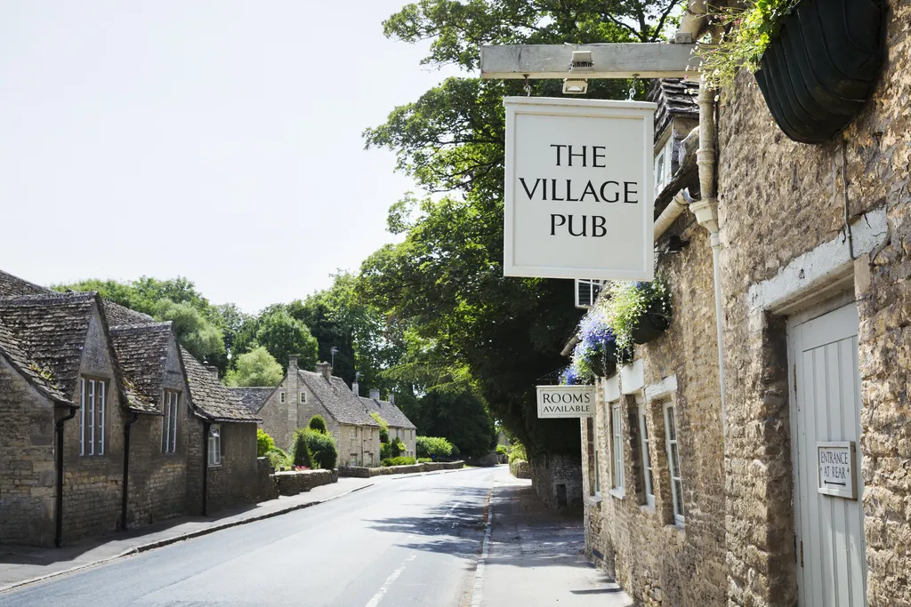
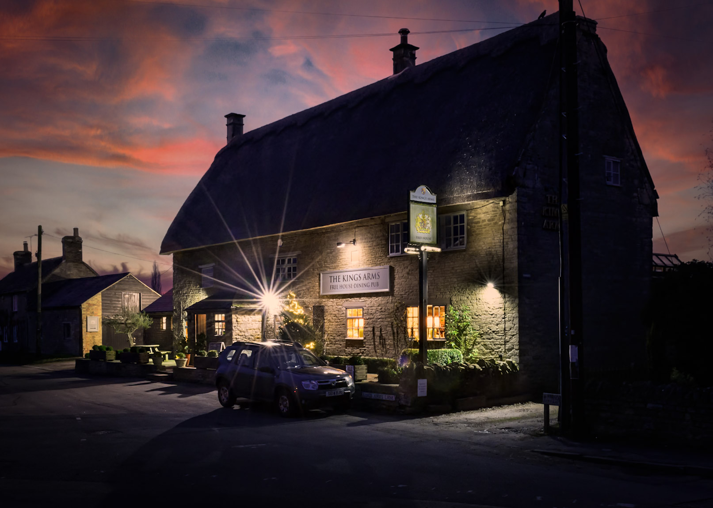
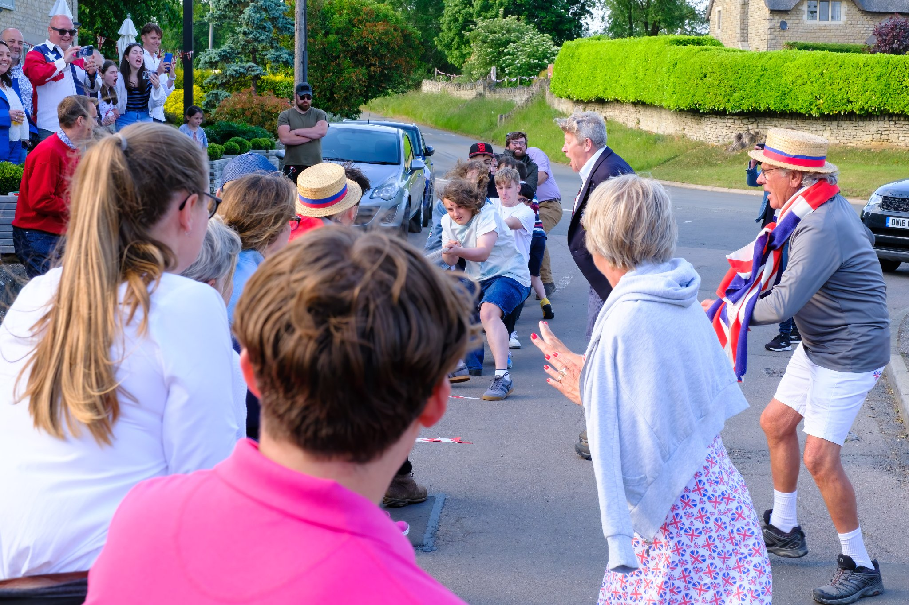

What's Happening Now
Today, the King’s Arms remains the only community space in the village open on a near-daily basis. It is the go-to venue for local meetings, social gatherings, celebrations, and village events, as well as a much-loved dining and drinking destination.
Its potential closure would leave Polebrook without a walkable, shared social space.

What We Will Lose
Losing the King’s Arms would cause genuine social hardship. For many residents, particularly older or less mobile members of the community, the pub is their primary, and sometimes only, source of regular social interaction.
This would be more than the loss of an amenity. It would be the loss of connection, inclusion, and everyday community life.

What We Can Do
With your support, we can protect the King’s Arms and preserve it as the historic and social lifeblood of Polebrook, not just for today, but for generations to come.
How You Can Help →